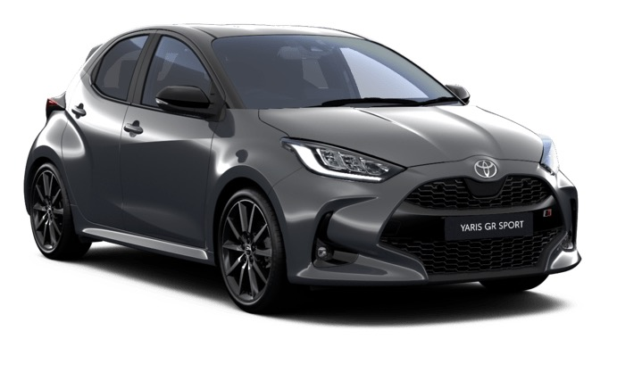
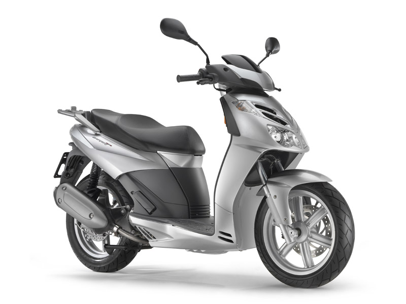
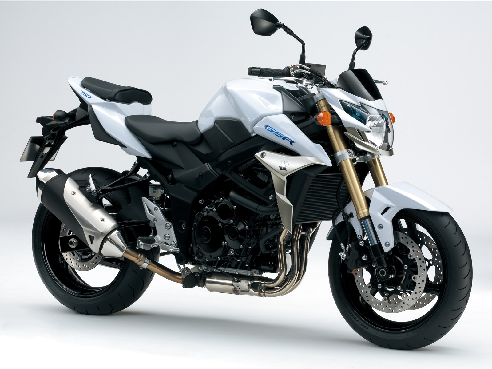
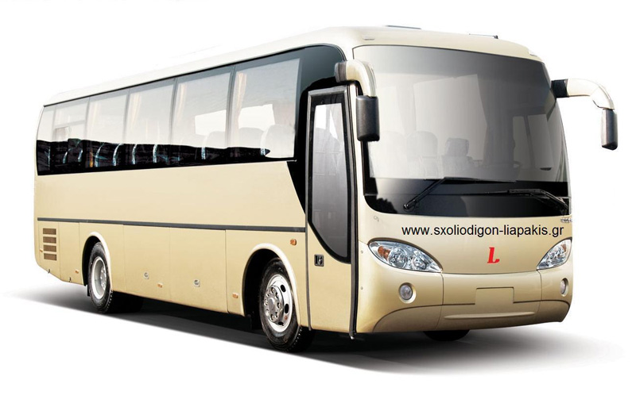

AYTOKINHTO
Κατηγορία Β
Επιβατικό αυτοκίνητο έως 9 θέσεις ή φορτηγό μέχρι 3,5 τόνους μεικτό βάρος. Το ελάχιστο όριο ηλικίας για την απόκτησή της είναι το 18ο έτος ή δυνατότητα απόκτησης στο 17ο έτος με την συναίνεση των γονέων (συνοδευόμενη οδήγηση).
ΚΑΤΗΓΟΡΙΑ Β ΑΥΤΟΜΑΤΟ (Β78)
Αυτόματο αυτοκίνητο της κατηγορίας Β όπου επιτυγχάνεται ευκολία χειρισμού και αποκλειστική ενασχόληση με τις συνθήκες της κυκλοφορίας εξαλείφοντας το άγχος του νέου οδηγού.
ΜΟΤΟΣΥΚΛΕΤΑ
ΚΑΤΗΓΟΡΙΑ ΑM

Μοτοποδήλατο 50 cm3 το ελάχιστο όριο ηλικίας για την απόκτησή της είναι το 16ο έτος πάντα με την συναίνεση των γονέων.
ΚΑΤΗΓΟΡΙΑ Α1
Μοτοσυκλέτες μέγιστου κυβισμού 125 cm3, το ελάχιστο όριο ηλικίας για την απόκτησή της είναι το 18ο έτος.
ΚΑΤΗΓΟΡΙΑ Α2

Μοτοσυκλέτα μέγιστης ισχύος 35 kW (47 hp), το ελάχιστο όριο ηλικίας για την απόκτησή της είναι το 20ο έτος.
ΚΑΤΗΓΟΡΙΑ Α
Μοτοσυκλέτα ανεξαρτήτου κυβισμού και ισχύος, το ελάχιστο όριο ηλικίας για την απόκτησή της είναι το 24ο έτος.
ΦΟΡΤΗΓΟ / ΛΕΩΦΟΡΕΙΟ
ΚΑΤΗΓΟΡΙΑ C

Φορτηγό ανεξαρτήτου βάρους το ελάχιστο όριο ηλικίας για την απόκτησή του είναι το 18ο έτος.
ΚΑΤΗΓΟΡΙΑ D
Λεωφορείο ανεξαρτήτου αριθμό επιβατών το ελάχιστο όριο ηλικίας για την απόκτησή του είναι το 21ο έτος.
ΚΑΤΗΓΟΡΙΑ CE Ή DE
Συρμός ή αρθρωτό, για την απόκτησή του απαιτείται πρέπει να έχετε επαγγελματικό δίπλωμα οδήγησης C ή D κατηγορίας.